Your first match with DeuceMate
From downloading the app to seeing your score afterwards. Scroll down one small step at a time — the bar on the right shows how far you've got and how much is left.
What you need
- Your iPhone and your Apple Watch, already paired together.
- Both charged and close to each other.
- Wi-Fi or mobile data on the iPhone, just for the download.
- About 10 minutes.
DeuceMate is free. It has no adverts and no account to create — there is nothing to sign up for.
When you're ready, scroll down to the next step.
Find DeuceMate in the App Store
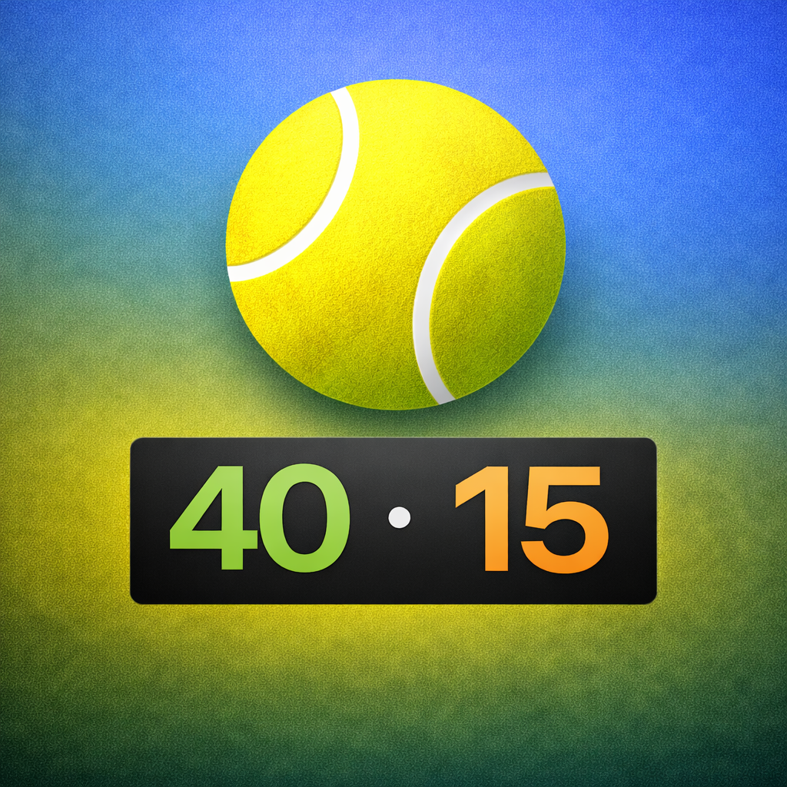
DeuceMateTennis score keeperDrawing — your screen will look similar.
- Open the App Store on your iPhone (the blue icon with a white “A”).
- Tap Search in the bottom corner.
- Type DeuceMate and tap Search on the keyboard.
Tap “Get”
Drawing — your screen will look similar.
Tap Get next to DeuceMate (the one with the tennis-ball icon).
If you've downloaded it before, you'll see a small cloud ☁︎ instead — tap that.
Confirm the download
to install ➜
Drawing — your screen will look similar.
Press the button on the right-hand side of your iPhone twice, quickly, and look at the screen.
Your iPhone may instead ask for your Apple Account password. That's normal — it's the same one you use for any app.
A small circle filling up, then an Open button. DeuceMate is now on your iPhone.
The watch gets its own copy
Usually the watch installs DeuceMate by itself within a few minutes. Keep the watch close to your iPhone.
Drawing — your screen will look similar.
If it isn't on your watch after 5 minutes:
- On the iPhone, open the Watch app (a black icon with a watch on it).
- Tap My Watch at the bottom.
- Scroll down to DeuceMate and tap Install.
Open DeuceMate on your watch
Drawing — your screen will look similar.
- Press the round dial on the side of your watch (the “Digital Crown”) once. You'll see your apps.
- Tap the tennis ball icon that says 40 · 15.
Can't find it? Turn the dial to zoom, or swipe around — it may be further down the list.
A “Health Access” message appears
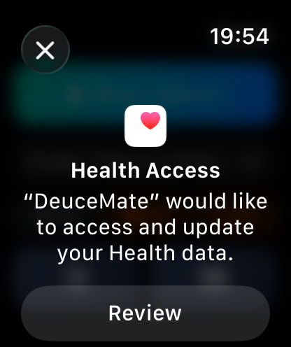
Tap Review.
This is safe, and it's Apple asking — not us. It lets the watch show your heart rate and calories during tennis and save the match as a workout, like any exercise. Your health information stays on your own watch and iPhone; DeuceMate never sends it to anyone.
Please don't tap the ✕ in the corner — that means “no”. (If you did, see “Tapped the wrong thing?” below.)
Tapped the wrong thing?
No harm done — scoring works without Health. To turn it on later:
- On your iPhone, open the Health app (white icon with a red heart).
- Tap your picture or initials at the top right.
- Tap Apps, then DeuceMate.
- Tap Turn On All.
Turn on the switch
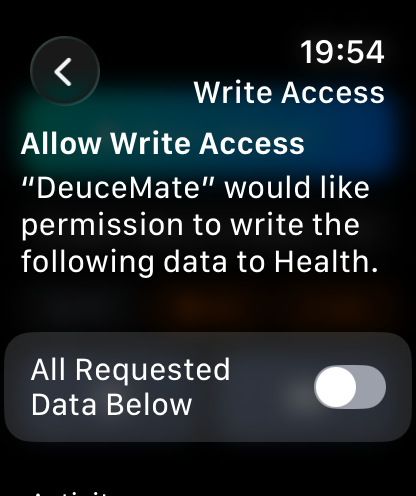
Tap the switch next to “All Requested Data Below”.
The switch turns green. That turns everything on in one go.
Scroll down and tap “Next”
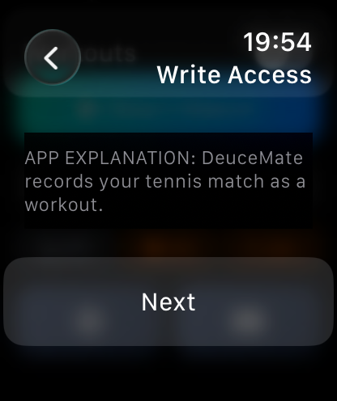
- Turn the round dial on the side of the watch (or slide your finger up the screen) to reach the bottom.
- Tap Next.
One more page — the same again
A second, very similar page appears. This one lets DeuceMate read your heart rate and steps.
- Tap the switch at the top so it turns green.
- Turn the dial to the bottom.
- Tap the last button — Allow (or Next, then Allow).
DeuceMate's start screen. The Health part is done — you won't be asked again.
You might also see “Learn the controls”. Tap Show guide to watch a short demonstration on the watch, or Not now to carry on with this guide.
Tap “Start Match”
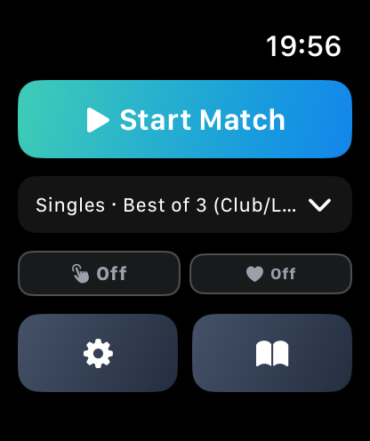
Tap the big Start Match button.
Underneath, it says Singles · Best of 3 — a normal club match. Leave it as it is for now. (Playing doubles? Tap that line first and choose Doubles.)
Don't worry about the small buttons below it for now.
Warm up, then tap the button
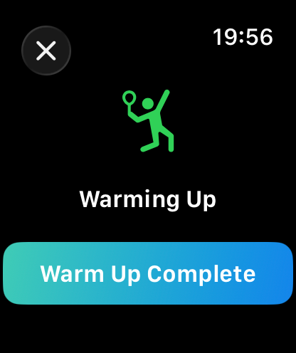
The watch waits while you knock up. There's no hurry.
When you're ready to play, tap Warm Up Complete.
Who serves first?
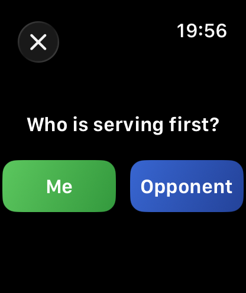
Tap Me if you're serving first, or Opponent if they are.
This is your scoreboard
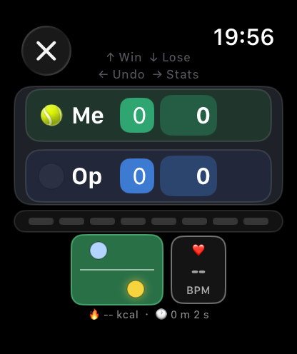
- The green row “Me” is you. The blue row “Op” is your opponent.
- The small number is games. The big number is points in this game.
- The little 🎾 tennis ball shows who is serving. It moves by itself.
The watch knows all the tennis rules — deuce, advantage, tie-breaks, who serves next. You only tell it who won each point.
You won the point? Swipe up
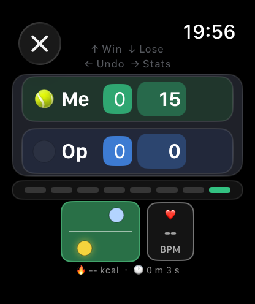
Put a finger on the watch screen and slide it upwards.
Your score goes up — here 15–0.
A short, firm slide works best. A gentle tap does nothing, so you can't score by accident.
They won the point? Swipe down
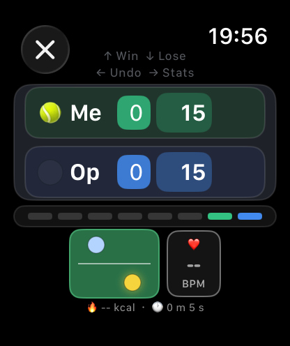
Slide your finger downwards.
Their score goes up — here 15–15.
An easy way to remember: up is me, down is them.
Made a mistake? Swipe left
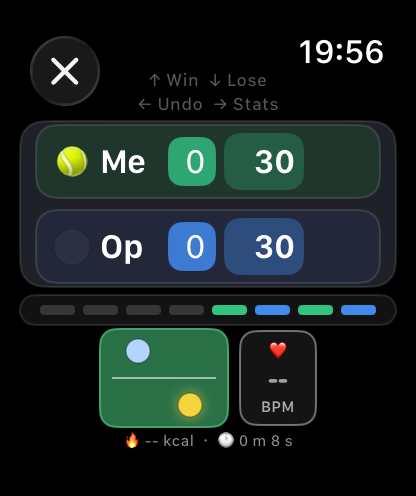
Here the point went to the wrong player: it says 30–30 but should be 30–15.
Slide your finger to the left to undo the last point.
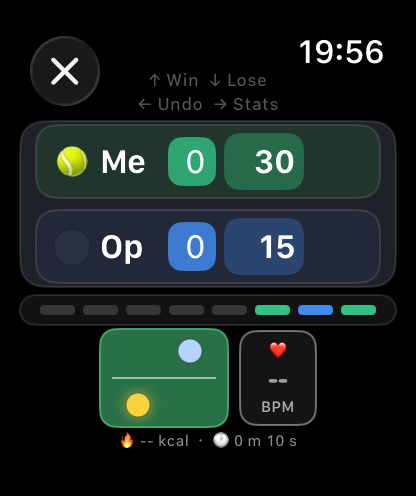
After swiping left: back to 30–15.
You can undo as many points as you need, one swipe each.
Time to change ends
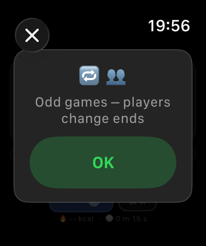
After certain games the watch reminds you to swap sides of the court.
Tap OK and carry on playing.
Just keep swiping
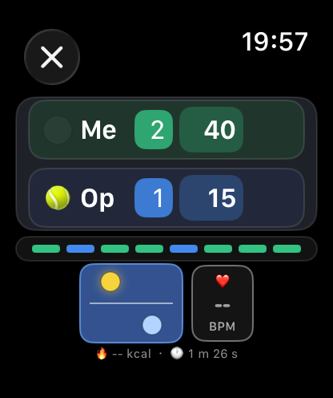
That's all there is to it. After every point: up if you won it, down if they did.
Here you lead 2 games to 1, and it's 40–15 in the current game. The ball is now next to “Op” because it's their turn to serve.
Your watch screen goes dark between points to save battery. Just raise your wrist — the scoreboard comes straight back.
Try it before you play
This is a pretend watch. Use it to practise — nothing here is saved.
- ▲ Your point = swipe up on the real watch
- ▼ Opponent point = swipe down
- ↶ Undo = swipe left
You can also swipe on the pretend watch itself, just like the real one.
Finished playing? Tap the ✕
If you play a whole match, the watch tells you when it's over. If you stop early — the court time ran out, it rained — do this:
Tap the round ✕ in the top-left corner.
Tap “End Match”
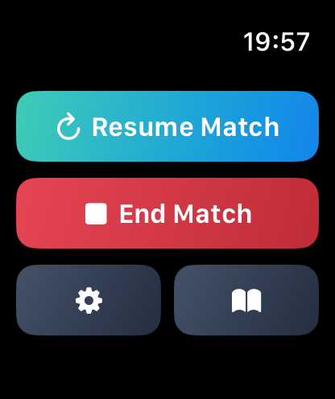
Tap the red End Match button.
Tapped ✕ by mistake? Tap Resume Match to go straight back to the scoreboard.
Say yes: “End Match”
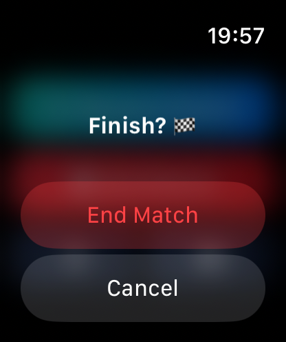
The watch checks you really mean it.
Tap End Match again.
The start screen. Your match is saved on the watch and sent to your iPhone.
Tap the clock button
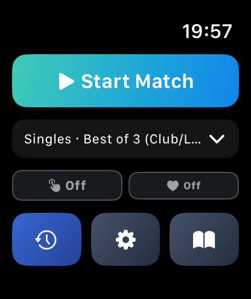
A new blue clock button has appeared at the bottom left. It holds your past matches.
Tap the clock.
Your match is there
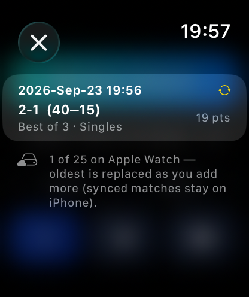
Each match shows the date and the score. Tap one to open it.
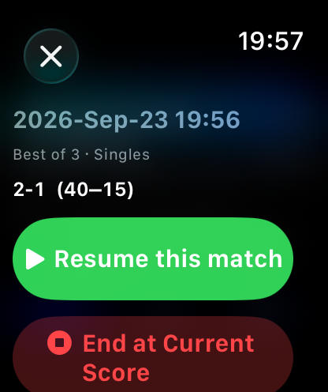
Stopped early and want to carry on another day? Tap Resume this match.
To swipe back out, slide your finger from the left edge of the screen, or tap ✕.
Open DeuceMate on your iPhone
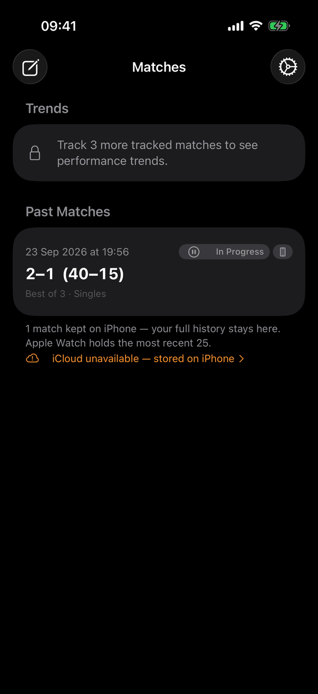
Find the tennis-ball icon on your iPhone and tap it. Every match from your watch appears here — and stays here, however many you play.
Tap your match.
Nothing there yet? Keep your watch near the phone and wait a minute. It sends the match across by itself.
Your whole match, point by point
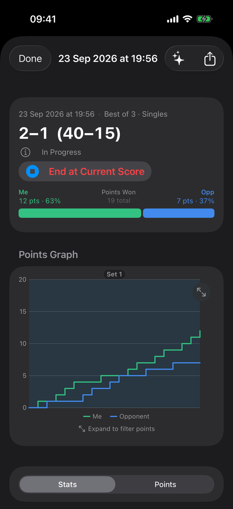
- At the top: the score.
- The green and blue bar: how many points each of you won.
- The graph: how the match went. When the green line climbs faster, you were on top.
This match says In Progress because it was stopped before the end. If you won't finish it, tap End at Current Score to mark it as done.
Tap Done at the top left to go back to your list.
That's it — enjoy your tennis! 🎾
A quick reminder to keep in mind on court:
- Start: Start Match → Warm Up Complete → who serves.
- Swipe up — I won the point.
- Swipe down — they won the point.
- Swipe left — oops, undo.
- Stop: ✕ → End Match → End Match.
When you're comfortable, the watch can also record how each point was won or lost, and show your match statistics. That's for another day — scoring is all you need to begin.
The watch also has its own short demonstration: tap the book button on the start screen, then Animated guide.
Questions? Visit the Support page.
Tip: the ← and → keys on a keyboard also move between steps.